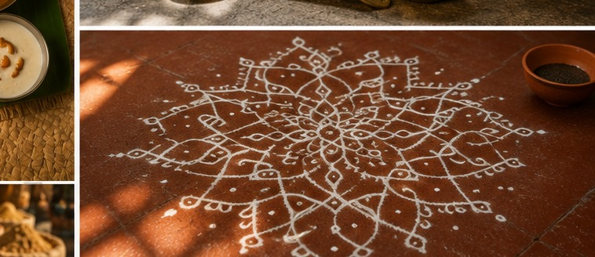
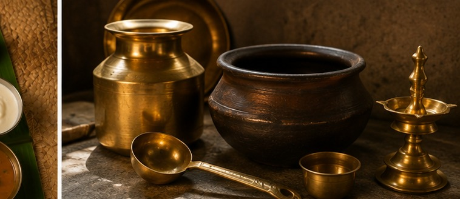

Pancha Samskara — Five Initiations
Formal entry into full Sri Vaishnava religious life traditionally happens through the pancha samskara, a set of five initiation rites administered by a guru. These rites mark key transitions in a person's spiritual life and formally align them with the Sri Vaishnava community and its practices.
Everyday Sacred Markers
The sacred thread, worn across the body by initiated members of the community.
The distinctive U-shaped tilak, marked with white sandalwood/clay and red sri choornam.
These markers are meant to be visible — worn out into the world, not reserved for the temple. They function as constant, physical reminders of the wearer's devotional commitments.


Diet as Discipline
Iyengar cuisine is entirely vegetarian and, notably, prepared without onion or garlic, in keeping with sattvic dietary principles that favor foods believed to promote clarity and calm over those believed to be stimulating or dulling. The community also traditionally practices endogamy — marrying within the group — as a way of preserving these shared practices across generations. Some especially observant members of the community go further still, restricting their diet to fruit alone every fortnight as a form of discipline.
Abroad, this diet has proven to be the tradition's most difficult export — niche ingredients simply weren't available, and many families adapted, using onion and garlic in daily cooking while reserving strict sattvic preparation for religious occasions.
Amudu — When Food Becomes Devotion
Perhaps the most distinctive feature of Iyengar cuisine is linguistic: the suffix "Amudu" is attached to the name of nearly every food item, transforming ordinary dish names into small acts of reverence. Saathamudu (rasam), Kariamudu (stir-fried vegetables), and Thirukkannamudu (payasam) are just a few examples. The cuisine also draws on ingredients rarely used elsewhere — Manathakkali (black nightshade berries) and Veepampoo (neem flower) — prized both for their distinctive bitterness and their traditional medicinal reputation.